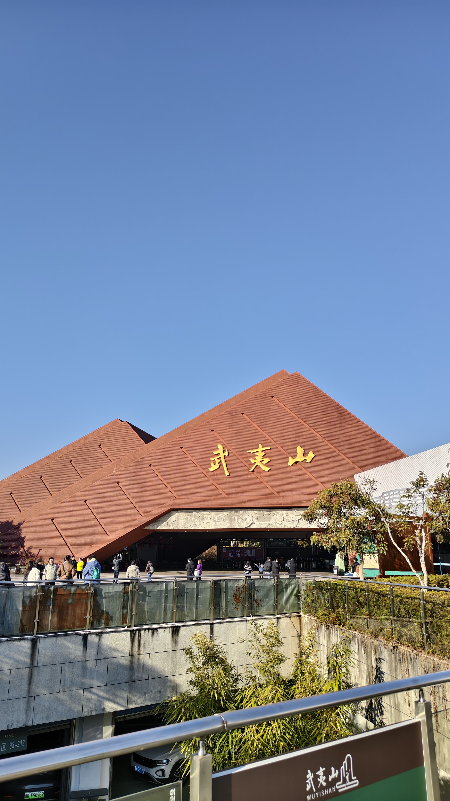
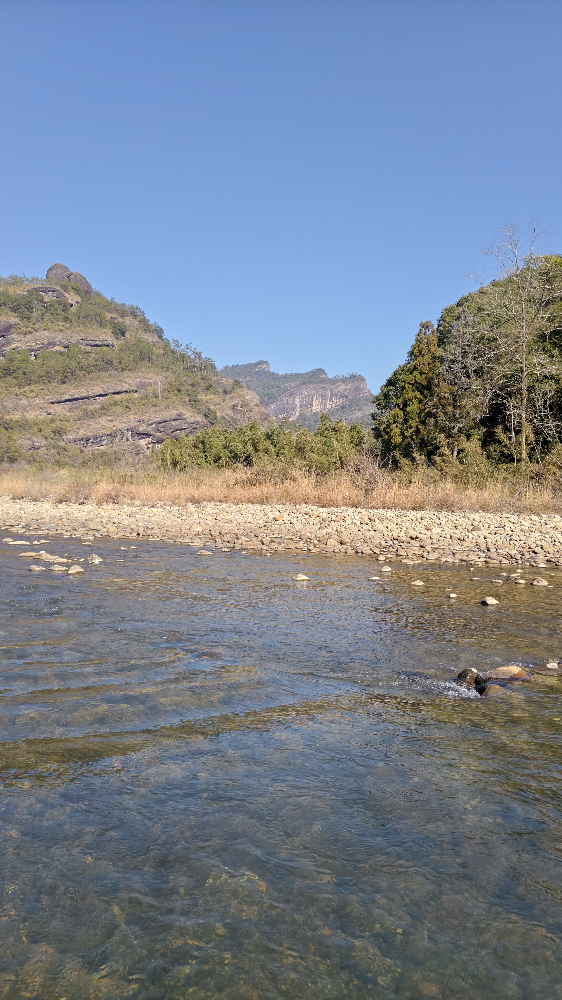

Tea & Mountains
武夷：山水间的呼吸
2025年的那个冬日，武夷山的蓝天纯净得不像话。
这里没有魔都的喧嚣，只有丹霞绝壁下的静谧。站在摩天巨岩下，才发现人的渺小；而坐在九曲溪畔，看那清澈见底的溪水流过碎石，心境也随之沉淀了下来。
这一站，我们不赶路，只为感受这份大自然的厚赠。

启程：武夷大门
独特的红色建筑在蓝天下格外醒目，那是旅程开始的信号。

仰望：壁立千仞
在巨大的岩壁前，那一座小小的凉亭成了最好的注脚——在自然面前，找一处安放身心的地方。

静聆：九曲清流
溪水清得透明，每一颗鹅卵石都在讲述着时间的故事。在这里，连空气都是甜的。